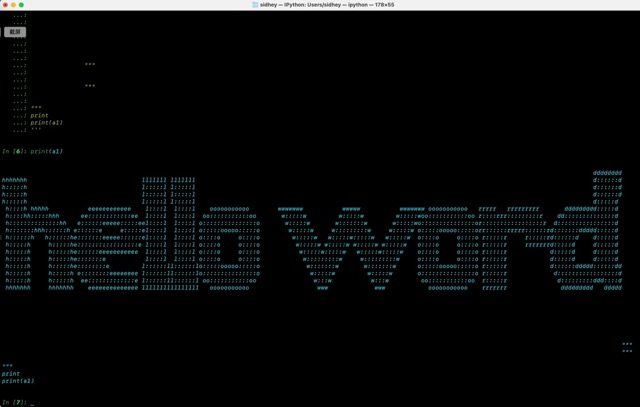

代码学习计划（从入门到放弃）（已放弃）

📑 目录
python学习进度(5%)😫
css学习进度🥱(5%)
js学习进度💤
mac无GUI工具已配置清单：
ExifTool（难用）、aria2c、spotdl、CopyQ、lux、MPV、MediaInfo、htop、wireshark、suricata、Tuxera、Nginx、ngrok、frp、python、openAI-GPT
网络连接相关（tcpdump、lsof、Little Snitch或LuLu、Wireshark）
1、课程资源：
Python-100-Days-master课程:https://drive.google.com/file/d/1ZNesLCgmXRj5yighkcKWU4MJCemIM2Bl/view css:https://www.tailwindcss.cn/docs/top-right-bottom-left2、工具:
制作ico文件：[favicon制作] 图片转字符:[IMG2TXT: ASCII Art Made Easy!] 文字转字符:[patorjk.com]网络连接相关（tcpdump、lsof、Little Snitch 或 LuLu、Wireshark）
ping
ping 223.5.5.5 # 阿里DNS
ping 8.8.8.8 # Google DNS
ping 1.0.0.1 #同下
ping 1.1.1.1 #
ping [xxx.xx.xxx.] #测试设备与目标ip的ping值
ping -c [xxxx. #onlie text 10秒
ping -t10 [xxx #text 10次
ipconfig getifaddr en0 #查看当前设备en0这个网络接口的ip地址
ifconfig #上一条命令的进阶，查看当前设备所有的网络接口，和哪些接口正在使用，也可以看到正在使用中的IP地址
sudo traceroute -I 1.1.1.1 #如果看到最后几跳都是 * * * 或停在电信/联通国际出口，那说明被墙过滤或丢弃掉了。
sudo lsof -i -n
#查询本机通讯端口
sudo lsof -i -n | grep battle
#使用lsof查询与battle有关的通信
sudo lsof -i :49403
#进一步查询
grep bnetgame /etc/services
#查询与bnetgame端口具体含义
sudo open -a TextEdit /etc/hosts
#查看系统的hosts文件，并编辑，也可以将‘open -a TextEdit’字段换成‘vim’或者‘nano’，他们三个之间的区别在于是几种不同的编辑器。最终结果是一样的。
scutil --dns
#
nettop -m tcp
#
#htop是一个强大的命令行工具（无GUI），用来监控系统进程。比 top 更加美观和易用，支持进程树显示、排序等功能
#通过 brew install htop 进行安装
#通过终端代码 htop 启用
#Python 3.x：
python -m http.server 80
#Python 2.x：
python -m SimpleHTTPServer 80
然后在另一个设备上使用http://0.x.x.x 连接端口的ip地址
#注意是http不是https协议
使mac m系列芯片也能读取ntfs格式的sd卡のapp#部署homebrew
/bin/bash -c "$(curl -fsSL https://raw.githubusercontent.com/Homebrew/install/HEAD/install.sh)"
#通过Homebrew安装命令行工具
brew install []
#例如安装exiftool
brew install exiftool
brew install aria2
#安装
aria2c 'URI | 磁鏈 | TORRENT檔 | METALINK檔'
#下载指定的资源
#ariac是一个没有图形界面的磁力、BT、BD资源下载工具，具体可以参见：
#https://www.youxiaohou.com/zh-cn/linux.html#_1-%E5%AE%89%E8%A3%85-aria2
spotdl 'you want to download music'
spotdl "不小心"
brew install --cask copyq
#copyQ是个无图形界面的剪贴板历史记录和拓展工具
如果您遇到应用程序崩溃并出现对话框提示"CopyQ 已损坏"或"无法打开 CopyQ"的问题，则可能需要运行以下命令
xattr -d com.apple.quarantine /Applications/CopyQ.app
codesign --force --deep --sign - /Applications/CopyQ.app
brew install lux
#lux是GitHub中的开源工具，用于下载互联网资源
lux "https://www.bilibili.com/video/BV1bC4y1m7YN/"
#下载这个视频
lux -i "https://www.bilibili.com/video/BV1bC4y1m7YN/"
#查看这个视频的清晰度
lux -f 32-7 "https://www.bilibili.com/video/BV1bC4y1m7YN/"
#下载指定清晰度的视频
exiftool [文件] #查看这个文件的元数据信息
exiftool -[标签]=[值] [文件路径] #修改这个文件的元数据信息
#例如
exiftool -Author="新作者名" /Users/yourname/Pictures/sample.jpg #exiftool 修改文件元数据
SpotDL是一款能够免费下载spotify上音乐的终端脚本，OSX（macos）安装方法：
```python
#方法1：
pip3 install spotdl #通过python安装spotdl
#方法2:
brew install ffmpeg #在系统范围内安装 FFmpeg
#ffmpeg是一个开源工具，可以处理音频、视频和多媒体文件的功能，包括格式转换、编解码、流处理等。
spotdl --download-ffmpeg #SpotDL需要FFmpeg。如果仅将FFmpeg用于SpotDL，则只需将 FFmpeg 安装到 SpotDL 安装目录即可： spotdl --download-ffmpeg
pipx install spotdl
#目前只能通过pipx安装spotdl
#通用：
spotdl "歌曲 歌单 专辑链接"
#或者通过python/ipython启动：
ipython -m spotdl "歌曲 歌单 专辑链接"
#启动web UI
spotdl web
#打开配置文件，进入web UI
#使用spotdl需要将VPN节点修改为Spotify帐号所在地区，并开启全局代理或修改终端的配置规则为代理
#指定输出歌曲的格式：
spotdl [songUrl] --output-format mp3/m4a/flac/opus/ogg/wav
#比如：
spotdl [songUrl] --output-format opus
#生成m3u播放列表软件：
spotdl [playlistUrl] --m3u
#下载字幕：
spotdl [songUrl] --lyrics-provider lyrics_provider
# lyrics_provider可选Genius和musicmatch
#嫌弃速度慢可以在密令后加dt和st参数，分部指定下载时线程数和抓取链接时的线程数：
spotdl [songUrl] --dt [number] --st [number]
#了解更多：
https://github.com/spotDL/spotify-downloader
#开发者主页：
https://github.com/spotDL/spotify-downloader
https://github.com/spotDL/spotify-downloader/releases
brew install aria2
#安装
aria2c 'URI | 磁鏈 | TORRENT檔 | METALINK檔'
#下载指定的资源
#ariac是一个没有图形界面的磁力、BT、BD资源下载工具，具体可以参见：
#https://www.youxiaohou.com/zh-cn/linux.html#_1-%E5%AE%89%E8%A3%85-aria2
spotdl 'you want to download music'
ffmpeg -i "input.mkv" -c copy -map 0 output.mp4
#重新封装，保留所有流，但不包含字幕
git remote set-url origin https://xxxxxxxxx@github.com/heyysid/NotionNext.git
git pull origin main
#拉取远程仓库更新到本地
git init
#重新初始化 Git 仓库
git remote add origin https://github.com/heyysid/NotionNext.git
#重新连接远程仓库
git add .
#第一步提交到暂存区
git commit -m "上传本地备份文件"
#第二步提交更改并添加文字注释
git push origin main
#第三步推送本地更新到GitHub
git push origin main --force
#强制推送到 GitHub，这会覆盖远程仓库中的所有文件！谨慎使用。
回滚到之前版本
#部署homebrew
/bin/bash -c "$(curl -fsSL https://raw.githubusercontent.com/Homebrew/install/HEAD/install.sh)"
#通过Homebrew安装命令行工具
brew install []
brew install exiftool
#安装exiftool
brew install mpv
#安装MPV
https://lizhongping.asia/article/xiaohongshuvideodow
sudo spctl --master-disable
#使用终端赋予应用程序权限：
sudo chmod -R 755 /[应用程序路径]
1.打开终端，输入以下命令：
`sudo xattr -rd com.apple.quarantine /Applications/xxxxxx.app`
其中「xxxxxx.app」是你无法运行的程序的名称，如：「SPlayer.app」，然后按键盘的回车键（Enter），输入密码后按回车键即可完成！
2.复制以下命令粘贴到终端
`sudo xattr -rd com.apple.quarantine`
打开Finder（访达），点击左侧的「[应用程序](https://www.digit77.com/solutions/bypass-notarization-application-signatures.html#)」，将应用拖进终端中，然后按键盘的回车键（Enter），输入密码后按回车键即可完成！
如果还不行，那就需要对应用进行本地应用签名操作：
1.先安装Command Line Tools 工具，打开终端工具输入如下命令：
`xcode-select --install`
2.弹出安装窗口后选择继续安装，安装过程需要几分钟，请耐心等待。
3.打开终端工具输入并执行如下命令对应用签名：
`sudo codesign --force --deep --sign - (应用路径)`
注意：应用路径是「访达（Finder）->应用程序」找到应用将其拖进终端命令 - 的后面，然后按下回车键，输入macOS的密码然后按回车(输入过程中密码是不显示的，输入完密码直接按回车键即可！)
4.出现 「replacing existing signature」 提示即成功！
## 基础搜索技巧
- 精准匹配："xxxx" 用英文引号" "包裹短语，强制搜索完全匹配的内容
- 排除词语：apple -fruit -iphone 用减号 - 排除不需要的词语
- 模糊匹配："life is * beautiful" 用星号 * 代替不确定的词
- 指定网站：AI site:zhihu.com 用site:限定在某个网站内搜索
- 指定格式：教程 filetype:pdf 用filetype:指定文件格式：
## 高级操作符
- AND / 空格：AI AND 未来（默认包含全部）
- OR：咖啡 OR 茶
- NOT / -：手机 -苹果
- intitle:关键词出现在标题，如 intitle:气候
- inurl:关键词出现在网址，如 inurl:news
- 时间范围：COVID 2020..2022
- 查相似网站：related:youtube.com
- 查反链：link:openai.com
## 实用搜索
- 汇率：100美元 to 人民币
- 计算：2^10 + 5*(3-1)
- 天气/股票/航班：北京天气，AAPL股价，UA888 航班
- 定义/同义词：define:serendipity，synonym:happy
- 以图搜图：Google 图片搜索上传或粘贴网址
## 垂直搜索
- 学术：作者:"李华" 机器学习；source:nature
- 食谱：蛋糕 ingredients:可可粉 time 60分钟
- 影视/书籍：IMDb rating:The Dark Knight；book:1984 Orwell
- 本地化：附近 咖啡馆 rating 4.5；博物馆 开放时间
## 移动端技巧
- 语音搜索：长按麦克风说需求
- 图片翻译：Google Lens 拍照翻译
- 快捷卡片：奥运会奖牌榜、世界杯赛程
## 隐私与其他
- 无痕模式：Ctrl+Shift+N（Mac 用 Cmd）
- 清除历史：Google 我的活动
- 计时器：set timer 25 minutes
- 随机数：random number between 1 and 100
- 彩蛋：do a barrel roll，google gravity
Mac 默认的英文键盘长按元音字母也会弹出包含声调的选单，但是这个选单是给英语音标用的，以元音 a 为例，选择项中只有 â ，没有 ǎ 。
`Control + Command + 空格`** 打开 Emoji 和符号面板
=用于定义变量和赋予
==是等于号，用于比较运算
<=是小于等于，用于比较运算
!=是不等于
<是小于号，用于比较运算
/
x
+
%
\\
Ture
False
print
{}
[] #定向某个字符
()
''
: #切片，定义
and
or
not
if（如果；
.pop（删除；
.append(在末尾添加；
.insert（插入；
break（跳出循环
for（循环
while（满足条件终止
continue（跳过单次循环
in（在；例如for in是循环在
elif #**`else if`**的缩写，用于在之前的条件不满足时检查另一个条件。如果前面的**`if`**语句不为真，那么程序将检查**`elif`**后的条件
else #语句用于在所有上述条件都不满足时执行的代码块。它是可选的，只能在条件语句的末尾使用一次
变量不需要双引号，只有常量才需要双引号
lsit是列表，符号为[]
a=[1,2,3]
元组是元组，符号为（）
a=(2,3,4)
删除是pop，写作.pop(x)
a.pop(2)
append是在末尾添加，写作.append(字符)
a.append(4232)
insert是插入，写作.insert(字符,字符)
a.insert(1,2)
定向输出是[1]
定向范围输出是[1:3]
取模运算符是%，当两个数相除的时候，未被除尽的部分为余数，被除掉部分是商
布尔数只有两种数据类型，第一种是真（Ture）第二种是假（False）
## 练习
print("hello word!")
a1="123"
print(a1)
a1="123"
a1="321"
print(a1)
a1="213"
a2=a1
print(a2)
a1="123"
print(f"i not {a1}")
print(f"{a1} not me")
print(f"{a1} and then tell me dont saty to you")
print(f'xxxx{xx[x]}')中，f表示
print("i am made fucker youer dadly,\ndo you know the? \n i dont thing you know")
a=1+2
print(a)
a=10
b=3
print=(a%b)
a=2
b=3
print(a%b)
a=7
b=3
print(a//b)
a=12
b=11
print(a>b)
a1=100
a2=200
print(a1>a2)
逻辑运算and or not
print(1==1 or 2>3)
a1=True
a2=False
a3=a1 or a2
print(a3)
a1=70.1
a2=70.2
if a1 < a2:
print("haha")
das = 12
fasd = 32
das = 43
dasdas = (fasd > das) and (das < fasd)
print(dasdas)
字符画：
```elm
>>> a1=""" #给变量赋予换行
... _____ _____ __ __ _____ _ _
... / ____| /\ | __ \ | \/ | |_ _| | \ | |
... | | __ / \ | |__) | | \ / | | | | \| |
... | | |_ | / /\ \ | _ / | |\/| | | | | . ` |
... | |__| | / ____ \ | | \ \ | | | | _| |_ | |\ |
... \_____| /_/ \_\ |_| \_\ |_| |_| |_____| |_| \_|
...
...
... """#结束换行
>>> print(a1)#打印变量
_____ _____ __ __ _____ _ _
/ ____| /\ | __ \ | \/ | |_ _| | \ | |
| | __ / \ | |__) | | \ / | | | | \| |
| | |_ | / /\ \ | _ / | |\/| | | | | . ` |
| |__| | / ____ \ | | \ \ | | | | _| |_ | |\ |
\_____| /_/ \_\ |_| \_\ |_| |_| |_____| |_| \_|
>>>
```
```
| 运算符 | 描述 |
| ------------------------------------------------------------ | ------------------------------ |
| `[]` `[:]` | 下标，切片 |
| `**` | 指数 |
| `~` `+` `-` | 按位取反, 正负号 |
| `*` `/` `%` `//` | 乘，除，模，整除 |
| `+` `-` | 加，减 |
| `>>` `<<` | 右移，左移 |
| `&` | 按位与 |
| `^` `\|` | 按位异或，按位或 |
| `<=` `<` `>` `>=` | 小于等于，小于，大于，大于等于 |
| `==` `!=` | 等于，不等于 |
| `is` `is not` | 身份运算符 |
| `in` `not in` | 成员运算符 |
| `not` `or` `and` | 逻辑运算符 |
| `=` `+=` `-=` `*=` `/=` `%=` `//=` `**=` `&=` `|=` `^=` `>>=` `<<=` | （复合）赋值运算符 |
```
a=1
b=2
if(a>b):
print("Tre")
a=1
b=2
if(a 2):
print("yes")
a=1==1
b=2==2
c=a or b
print(c)
a=100
b=100 == 100
if a<101:
print("chaochu")
b=100 != 100
print(b)
a=100
b=100 == 100
if a<100:
print("chaochu")
b=100 != 100
print(b)
a=1
b=2
c=3
d=(ab)
print(d)
men=("haha","enen")
print(men[1])
men=("1","2","3","4","5","6")
print(men[0])
print(men[2])
print(men[5])
a=[2,3,4,5,6]
print(a)
a=[2,3,4,5,6]
a.append (1)
print(a)
print(a[1:5])
a=[2,3,4,5,6]
a.append (1)
a.insert(1,55)
a.pop(2)
print(a)
print(a[1:5])
a={"1":"我的","2":'你的',"3":"他的"}
print(a["1"])
a=[1,2,3,4,5,6]
print(a[0])
print(a[1])
print(a[2])
print(a[3])
print(a[4])
for b in a:
print(b)
fruitlsit=["apple",'grape','cherry']
for fruit in fruitlsit[0:2]:
print(fruit)
studentage={"gary":14,"adam":13,"li":10,"zhang":20}
for key in studentage:
studentage[key]=16
print(studentage)
jdlist=[1,2,3,4,5,6,7]
a=0
for b in jdlist:
a=a+b
print(a)
list=[1,2,3,4,5,6,7]
a=0
for b in list:
a=a+1
print(f'第{a}名是{b}')
jdlist=[3,4,5,6,"-"]
jdlist.pop(4)
for mylist in jdlist:
if mylist > 3:
print(mylist)
helist=['a','f','g','t','y']
mylist=0
while mylist < 5:
print(helist[mylist])
mylist=mylist+1
nubwes=1
while nubwes<=33:
print(nubwes)
nubwes=nubwes+1
num=1
while num < 30:
if num % 2 == 1:
print(num)
num=num+1
mylist=[1,2,4,6,7,9]
for her in mylist:
if her > 7:
print(her)
break
hey=[1,4,2,6,2,5,6,7,22,1,4,6,]
for my in hey:
if my < 3:
continue
print(my)
# *coding: utf-8 -*
import time
name = 12792
delay = int(24 * 60 * 60)
while name > 0:
print(name)
name=name - 1
time.sleep(delay)
print("倒计时结束")
# *coding: utf-8 -*
import time
name = 12792
delay =1000
while name > 0:
print(name)
name = name - 1
time.sleep(delay/1000)
if name < 12788:
break
print("倒计时结束！")
```python
import time
name = 12792
delay = int(24 * 60 * 60)
while name > 0:
print(name)
name=name - 1
time.sleep(delay)
print("倒计时结束")
```
```python
import time
from datetime import datetime
mytime = 12792
delay1 = int(24 * 60 * 60)
delay = delay1 - 1
time1 = "00:00:01"
while True:
time2 = datetime.now().strftime("%H:%M:%S")
if time2 == time1:
while mytime > 0:
mytime = mytime - 1
print(mytime)
break
if mytime==0:
print("倒计时结束")
time.sleep(delay)
```
```python
import time
from datetime import datetime
mytime = 12792
time1 = "00:00:01"
delay = 1 # 每秒钟检查一次
while True:
time2 = datetime.now().strftime("%H:%M:%S")
if time2 == time1:
while mytime > 0:
mytime -= 1
print(mytime)
time.sleep(1) # 倒计时每秒减少 1
if mytime == 0:
print("倒计时结束")
break # 倒计时结束，退出循环
```
```python
import time
from datetime import datetime, timedelta
import tkinter as tk
from threading import Thread
# 输入生日，格式：年-月-日
birthday_str = input("请输入你的生日(YYYY-MM-DD): ")
birthday = datetime.strptime(birthday_str, "%Y-%m-%d")
# 35岁生日
age_35_birthday = birthday.replace(year=birthday.year + 35)
# 当前日期
today = datetime.now()
# 计算距离35岁生日的剩余天数
remaining_days = (age_35_birthday - today).days
def update_countdown():
global remaining_days
while remaining_days > 0:
# 等待到第二天的00:00（UTC+8）
now = datetime.now()
next_day = now.replace(hour=0, minute=0, second=0, microsecond=0) + timedelta(days=1)
time_until_next_day = (next_day - now).total_seconds()
time.sleep(time_until_next_day)
# 每天减少1天
remaining_days -= 1
# 更新图形界面的倒计时显示
update_gui()
if remaining_days == 0:
print("你已失业")
break
# 创建图形界面
def create_gui():
root = tk.Tk()
root.title("倒计时")
label = tk.Label(root, text=f"距离失业还有 {remaining_days} 天", font=("Arial", 24))
label.pack(padx=20, pady=20)
def update_gui():
label.config(text=f"距离失业还有 {remaining_days} 天")
if remaining_days == 0:
label.config(text="你已失业")
# 启动倒计时线程
countdown_thread = Thread(target=update_countdown)
countdown_thread.start()
root.mainloop()
# 启动图形界面
create_gui()